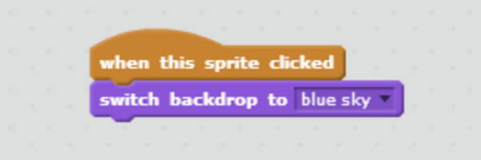

Unit 6 - Whole Number: Operations and Number Stories
Teachers Learning Guide

Pages: 122-122
Development Rationale
While creating each unit we wanted to only teach one new concept at a time. This could be either an EDM 4 math lesson or a computational thinking/computer science concept. Some activities throughout the unit will reinforce the skills and concepts needed to create the Scratch project but may not necessarily reflect the EDM 4 activities in that lesson.’
Common Core Standards
- 2MD.10, 2NBT.5, 2OA.1, 2MD.5, 2NBT.7
- CT Focus Skills
- Decomposition
- Pattern Recognition (new skill)
CS Focus Skills
- Debugging (using the Code.org recipie & more complex)
- Conditionals (new skill)
Scratch Skills
- Students will be able to create, save, add sprites, and speech bubbles.- Students will be able to change from one background to another using blocks.
CT/CS Standards and Skills
- L1:3.CT.1&2
- L1:3.CL.1&2
- L1:3.CPP.4
- L1:3.CD.1, L1:3.CI.1&2 (CSTA)
Scratch Prerequisites
In order for students to learn how to use Scratch you need allow time for students to login and have free time to play with the Scratch blocks, outside of the unit plans.
Reflections
Teacher Notes
In this unit lessons 6.3 and 6.6 have been taken out and additional computational lessons have been added. The skills that were taught have been merged into lessons as part of the mental math.
The lessons are not in numerical order and have been broken up to account for the additional Computational and Computer Science lessons.
Please consider completing all math boxes the following day the lesson was taught, as part of morning work, to reinforce the skills that have been taught.
Code.org Unplugged Activity - Course 2 Lesson 13: Bee Conditionals
As you are planning please consider adding this unplugged conditional activity to one of your Code Time activities. Please see the attached link for the lesson plan: Red Light Green Light.
Unit 6 Lesson 1
Standards for Mathematical Practice
- SMP2 Reason abstractly and quantitatively.
- SMP3 Construct viable arguments and critique the reasoning of others.
- SMP4 Model with mathematics.
Materials
- Copies of the Counting Pockets Math Masters (Page 157)
- Pencils
- Classroom computer
- Whiteboards & Markers
Math Message
Math is fun!
CS Activity
Take a Counting Pockets page.

After students have completed the Counting Pockets Activity; show students the already created Scratch activity where a number story was created using how many pockets each person has. Please click on the link to show students: Scratch Number Story 6.1
Have students solve the number story on their white boards.
Share out as a class.
Teacher Note: Follow all instructions in the teacher’s manual.
Unit 6 Lesson 2
- Lesson 6.2 pg 540 Solving Comparison Number Stories
- Math Journal 2 pg 137-138
Standards for Mathematical Practice
- SMP4 Model with mathematics.
- SMP5 Reason abstractly and quantitatively.
- SMP6 Construct viable arguments and critique the reasoning of others.
Materials
- Prep Work: Print out a copy of the blocks used to change the background.
Math Message
- Mental Math: Ballpark Estimates pg 566
- Math Journal 2 pg 153
CS Activity
Show students a Scratch example of how to change the background using blocks on the workspace.
- Click on the following link to share with students: Scratch Number Story 6.2
- The purpose of this lesson is for students to see a double-digit number story and for students to see the blocks needed for the background to change. 
Make sure to point out the blocks used to change the background.

Show students the printable copies of the blocks used to change the background. Make sure to display them around your room for future use.